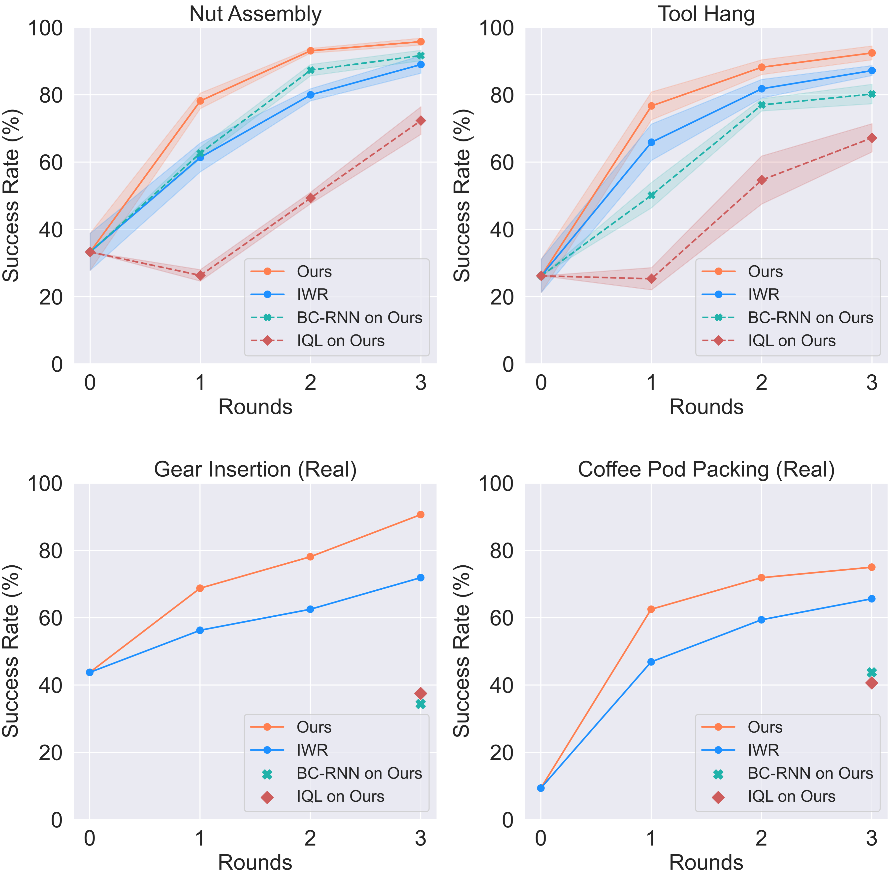
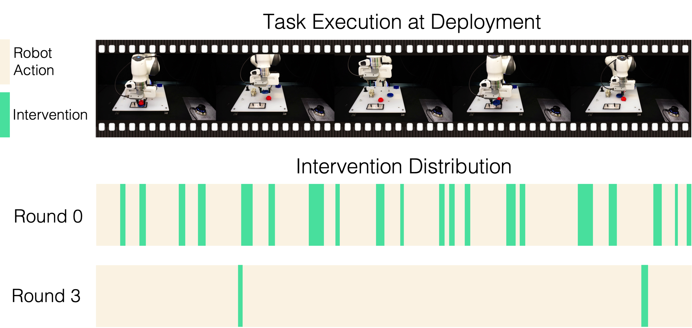

Robot Learning on the Job:
Human-in-the-Loop Autonomy and Learning During Deployment
|
With the rapid growth of computing powers and recent advances in deep learning, we have witnessed impressive demonstrations of novel robot capabilities in research settings. Nonetheless, these learning systems exhibit brittle generalization and require excessive training data for practical tasks. To harness the capabilities of state-of-the-art robot learning models while embracing their imperfections, we present Sirius, a principled framework for humans and robots to collaborate through a division of work. In this framework, partially autonomous robots are tasked with handling a major portion of decision-making where they work reliably; meanwhile, human operators monitor the process and intervene in challenging situations. Such a human-robot team ensures safe deployments in complex tasks. Further, we introduce a new learning algorithm to improve the policy's performance on the data collected from the task executions. The core idea is re-weighing training samples with approximated human trust and optimizing the policies with weighted behavioral cloning. We evaluate Sirius in simulation and on real hardware, showing that Sirius consistently outperforms baselines over a collection of contact-rich manipulation tasks, achieving 8% boost in simulation and 27% on real hardware than the state-of-the-art methods, with twice faster convergence and 85\% memory size reduction. |
Sirius: Overview
|
Sirius enables a human and a robot to collaborate on manipulation tasks through shared control. The human monitors the robot’s autonomous execution and intervenes to provide corrections through teleoperation. Data from deployments will be used by our algorithm to improve the robot’s policy in consecutive rounds of policy learning. |
Continuous Deployment and Update Cycle
|
Robot deployment and policy update co-occurs in the system: deployment data are passed to policy training, while a newly trained policy is deployed to the target environment for task execution. |
Method
Intervention-based Reweighting Scheme
|
Human interventions signify task structure and human trust. We use human interventions to re-weight training samples in a supervised learning setting. Based off weighted behavior cloning, our method explicitly leverages the human-intervention signals in the dataset to construct our weighting scheme. |
Memory Management
|
Growing deployment data size imposes memory burden over time. It also slows down learning convergence and dilutes important, useful samples. We reorganize memory to reject samples and prioritize important ones. We consider different memory management strategies: FIFO, FILO, LFI, MFI, Uniform. After applying memory management strategies, the dataset is smaller, and important, useful samples are prioritized. |
Experiments and Quantitative Results
|
Our system ensures safe and reliable execution through human-robot teaming. We evaluated the autonomous policy performance of our human-in-the-loop framework on 4 tasks: |
|
We evaluated the autonomous policy performance of our human-in-the-loop framework on 4 tasks. Ours autonomous policy outperforms baselines consistently over three rounds of deployments and policy updates across four tasks. As the autonomous policy improves over long-term deployment, the amount of human workload decreases. |
|  |
Policy Update over Deployment Time
|
We showcase qualitatively the human-in-the-loop deployment performances in initial and later stages of the deployment in Sirius. The dynamics of human-robot partnership changes as deployment continues, with considerable less human workload. |
No-cut video of gear insertion deployment, round 0 (10 trials)
No-cut video of gear insertion deployment, round 3 (10 trials)
|
We visualize the human intervention distribution of the above task execution trials of Round 0 and Round 3 respectively. Our Round 3 needs very little human intervention and the robot can run autonomously most of the time. |
|  |
Qualitative Performance Comparisons
|
We compare Ours and the IWR baseline performances, and show how Ours learns better quality policy and more effective self-correction behaviors on critical bottleneck states. We show both real-world tasks: Gear Insertion and Coffee Pod Packing. |